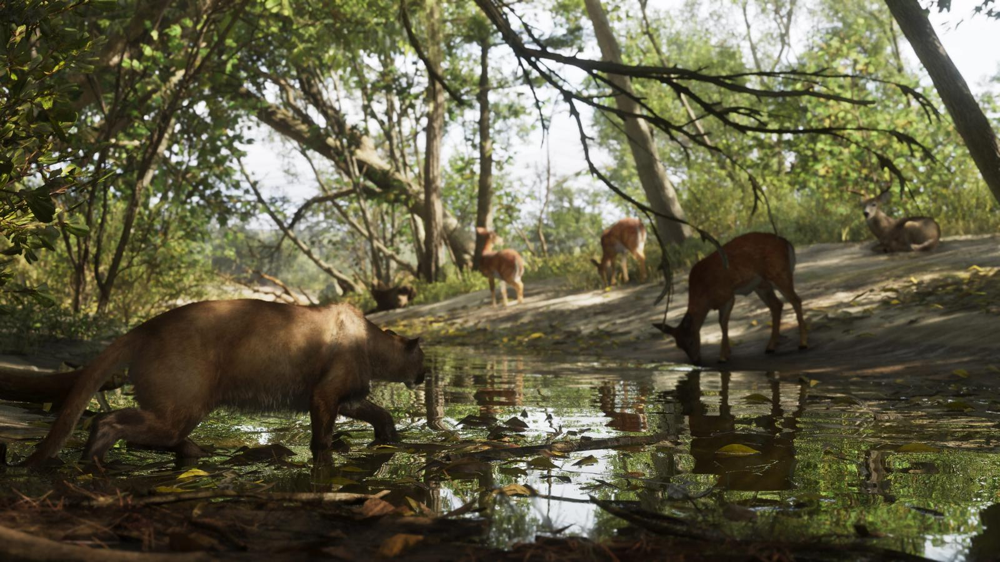

Животные в GTA 6: кто живёт в Леониде
Обновлено:

- В трейлерах и на скриншотах замечено около 30 видов животных.
- Охота — способ заработка, рыбалка — только «поймал и отпустил».
- Собак можно гладить, ругать и рассматривать.
- Тема номера Game Informer 29 сентября — дикая природа и погода Леониды.
Сцена у водопоя
Лес на севере Леониды. Тихо, только капает с листьев. Четыре оленя вышли к луже на водопой, старый самец лежит на песке и лениво смотрит в сторону. Никто из них не видит, что в тени, по брюхо в воде, к ним уже крадётся пума. Ещё шаг — и тишина закончится.
Это не кадр из документального фильма, а официальный скриншот Rockstar из национального парка Mount Kalaga. В GTA V животные были почти декорацией: олени у дороги, чайки на пляже и акулы, которые внезапно утаскивали тебя с пирса. В GTA 6 Rockstar обещает экосистему — животные охотятся, прячутся и живут своей жизнью, даже когда ты на них не смотришь.
Кого уже видели
По подсчёту GTABase, в трейлерах и на официальных скриншотах уже заметили около 30 видов. Вот они по группам:
| Где живут | Животные |
|---|---|
| Болота и реки | американский аллигатор, змеи, бобр, цапли, журавли, колпицы, утки |
| Леса и поля | олени, пума (флоридская пантера), рысь, кабан, лиса, енот, белка |
| Море и побережье | дельфины, ламантины, акулы, морские черепахи, угри, пеликаны, чайки, фламинго |
| Город | зелёные игуаны, кошки |
| Собаки | доберман, немецкая овчарка, ротвейлер, чихуахуа |
Список составлен по официальным кадрам. После релиза дополним его всеми видами из игры.
Хозяева болот

Главное животное Леониды — аллигатор. Он в трейлерах, на скриншотах, в коллекционном наборе (фигурка аллигатора Макки) и даже в прицепе у охотников на кадре, который мы разобрали по деталям. Rockstar описывает Grassrivers как рай для охотников, где под водой скрываются опасные хищники, — так что купаться в местных протоках, скорее всего, плохая идея.
Аллигатор — официальный символ-рептилия Флориды с 1987 года, а в штате живёт около 1,3 миллиона аллигаторов. А ещё во Флориде есть проблема, которую Rockstar вполне может обыграть: в Эверглейдс расплодились бирманские питоны, завезённые как домашние питомцы. Власти штата даже проводят официальное соревнование по их отлову — Florida Python Challenge. Змеи в GTA 6 уже замечены. Будут ли среди них питоны — узнаем в ноябре.
Лес Mount Kalaga
Север штата — территория оленей и пумы. Rockstar прямо называет Mount Kalaga местом для охоты на оленей и горных львов, рыбалки, каяков и бездорожья. Пума в GTA 6 — явный аналог флоридской пантеры, одной из самых редких кошек Северной Америки: в дикой природе их осталось около 120–230 взрослых особей.

Под водой
В Leonida Keys, по описанию Rockstar, под водой можно встретить гигантских черепах и богатую морскую жизнь. Дельфины, акулы, угри — всё это уже мелькало в кадрах. Отдельная звезда — ламантин: медленная «морская корова», которую во Флориде охраняют как официальное морское млекопитающее штата. В коллекционном наборе даже есть стопка с ламантином Чанки.
Охота
В GTA 6 охота — способ заработка. По словам ютубера TGG, побывавшего на превью, доступ к ней открывается через знакомого Джейсона. Животных можно не только добывать, но и «осматривать» — механика, знакомая по Red Dead Redemption 2, где у каждого вида была своя карточка с описанием. Все способы заработка — в статье Как зарабатывать деньги в GTA 6.
Рыбалка
С рыбалкой неожиданный поворот: пойманную рыбу нельзя оставить себе — только отпустить. В RDR2 улов можно было приготовить и съесть, а здесь рыбалка чисто для удовольствия, испытаний и коллекции. Причину, по словам TGG, объяснил Роб Нельсон из Rockstar North: такая механика «не подходила этой игре».
Зато еда в GTA 6 влияет на героев: если много есть, персонаж набирает вес, а лишние калории можно превратить в мышцы в спортзале. Подробнее — Новые механики GTA 6: что изменилось.
Собаки и кошки
Собак в GTA 6 можно гладить, ругать и рассматривать вблизи. В кадрах уже видели добермана, немецкую овчарку, ротвейлера и чихуахуа — от сторожевых псов у наркопритонов до карманных собачек на Оушен-Бич. По городу гуляют кошки, а по асфальту Keys ползают игуаны — в реальной Южной Флориде их так много, что в холодные ночи они впадают в оцепенение и падают с деревьев.
Что ещё узнаем
29 сентября Game Informer опубликует 14-страничный материал о GTA 6, и одна из его главных тем — дикая природа Леониды: на суше, в воздухе и под водой. Как только номер выйдет, дополним эту статью. Все новости — в сводке дня.
Источники: Rockstar Games (официальные скриншоты и описания регионов); GTABase (список животных); GameSpot (охота и рыбалка, 03.09.2026); Game Informer (анонс №382); Florida Fish and Wildlife Conservation Commission.